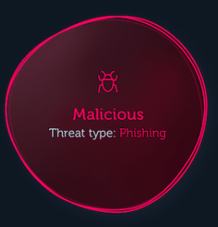

ChildSecurity
Malicious Links
What is Malicious?
URLs can be created and registered by yourself, so some malicious hackers will register their own malicious links and put malicious codes in the content the links point to, when innocent users click on such links, their computers will be hacked, specifically your game account password is stolen, or your computer is hit by a virus, etc.
The following page will provide you with a virtual Windows operating environment in which you can experience this cyber attack

NEXT